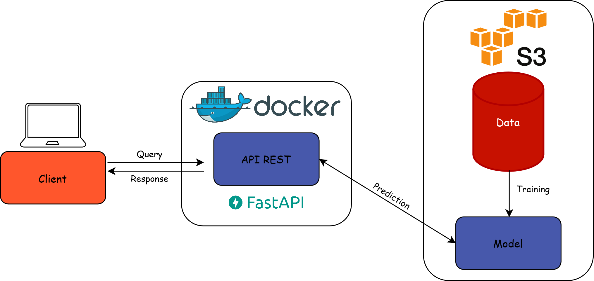

Mise en production des projets de data science
Cours de 3e année à l’ENSAE
2025/2026
Romain Avouac
Lino Galiana
7️⃣ Déploiement
La mise en production
- Mettre en production : faire vivre une application dans l’espace de ses utilisateurs
- Service : déployer l’application dans un format qui répond aux besoins des utilisateurs potentiels
- Faire vivre :
- Superviser l’application pour la rendre performante
- Favoriser l’amélioration continue
- L’objectif de ce chapitre est de convertir un projet maintenable et portable en un service exploitable
Un sujet large
- Les questions essentielles à se poser :
- Quel format adapté pour répondre aux besoins ?
- Quelle infrastructure de production pour assurer la performance et le passage à l’échelle ?
- Comment superviser l’application pour assurer sa résilience en production ?
- Comment automatiser le processus de déploiement pour permettre l’amélioration continue ?
- De nombreuses solutions techniques possibles
- Présentation des concepts standards
Formats de valorisation
- Critères à prendre en compte :
- Quels sont les utilisateurs potentiels ?
- Quels sont leurs besoins ?
- Exemple “fil rouge” : comment servir un projet de ML à ses utilisateurs potentiels ?
Servir un projet de ML
- Mettre à disposition le code pour entraîner le modèle
- Reproductible… si on a les données et les ressources
- Mettre à disposition le modèle entraîné
- Audience technique et adhérence au framework d’entraînement du modèle
- Exposer le modèle via une API
- Audience technique mais plus large car interopérable
- Exposer le modèle via une interface interactive
- Audience large mais plus coûteux
Servir un modèle de ML via une API
- Construire une API pour servir le modèle
- Interface entre l’utilisateur et le modèle entraîné

Les APIs : définition formelle
Une API (application programming interface) est une interface logicielle qui permet de « connecter » un logiciel ou un service à un autre logiciel ou service afin d’échanger des données et des fonctionnalités.
- Définition peu informative : avec cette définition tout est plus ou moins une API…
Les APIs : définition opérationnelle
- Une API est un contrat logiciel qui définit :
- Ce que l’on peut demander
- Sous quel format
- Ce que l’on reçoit en retour
- Une API permet à deux systèmes de communiquer sans exposer leur implémentation interne
Les APIs REST
- API RESTful : API conforme au style d’architecture REST
- Repose sur le protocole HTTP

Exemples d’API REST
- Le client :
- envoie des requêtes HTTP (
GET,POST, etc.) - à un serveur accessible depuis une URL
- sur un certain endpoint qui expose le service
- envoie des requêtes HTTP (
Exemple : https://api-adresse.data.gouv.fr/search/?q=comédie&type=street
- Le serveur renvoie une réponse : un code retour et de la donnée (en l’absence d’erreur), souvent au format
JSON
Architecture cible
- Construire une API pour servir le modèle
- Interface entre l’utilisateur et le modèle entraîné

De l’API locale au service déployé
- On a les outils pour construire une API locale
- Du code applicatif auquel il faut rajouter une API
- Une couche de stockage pour le modèle entraîné
- La conteneurisation pour encapsuler l’application
- Il nous manque des outils pour en faire un service déployé et résilient
- Un environnement de production pour le déploiement
- Des outils de supervision pour gérer la charge
- Des outils d’automatisation pour l’amélioration en continu de l’application
Environnement de production
Dépend essentiellement de l’infrastructure à disposition
Propriétés recherchées :
- Adapter les ressources (scaler) selon les besoins
- Déploiements reproductibles et automatisés
- Monitoring de l’état de santé des applications
Solution : utiliser un orchestrateur de conteneurs
- Base du
SSP Cloud: Kubernetes
- Base du
Fonctionnement de Kubernetes
- Approche Infrastructure As Code : on déclare l’état désiré du déploiement,
Kubernetess’assure en continu qu’il correspond à l’état réel

L’approche CI/CD
- Intégration continue (CI) : chaque commit déclenche un processus “test, build and release”
GitHub: GitHub ActionsGitLab: GitLab CI/CD
- Déploiement continu (CD) : les nouvelles releases sont automatiquement déployées
- Sur le
SSP Cloud: ArgoCD
- Sur le
CI : implémentation
- Principe : commit -> exécution d’une série d’étapes
- Script exécuté sur une VM : runner
- Mise à disposition d’un output : artifact
- Multiples outputs possibles
CI : anatomie d’un fichier de CI
- Spécification : fichier
.yamlqui paramétrise le runner- ⚠️ Situé dans le dossier
.github/workflows/
- ⚠️ Situé dans le dossier
.github/workflows/ci.yaml
name: Build Docker image
on:
push:
branches:
- main
tags:
jobs:
docker:
runs-on: ubuntu-latest
steps:
- name: Set up QEMU
uses: docker/setup-qemu-action@v3
- name: Set up Docker Buildx
uses: docker/setup-buildx-action@v3
- name: Docker meta
id: meta
uses: docker/metadata-action@v5
with:
images: ensae-reproductibilite/api-titanic
- name: Login to Docker Hub
uses: docker/login-action@v3
with:
username: ${{ secrets.DOCKERHUB_USERNAME }}
password: ${{ secrets.DOCKERHUB_TOKEN }}
- name: Build and push
uses: docker/build-push-action@v5
with:
push: true
tags: ${{ steps.meta.outputs.tags }}
labels: ${{ steps.meta.outputs.labels }}CI/CD : implémentation sur Kubernetes
Conclusion
- On a construit un pipeline reproductible et automatisé
- Comment tenir compte des spécificités du ML ?
- Approche MLOps
Application
Mise en production
- Consignes sur le site du cours
- Partie 4️⃣ : automatisation de la livraison d’une application avec l’intégration continue
- Partie 5️⃣ : déploiement d’une application et industrialisation
Bonnes pratiques pour la mise en production des projets de data science (retour homepage)